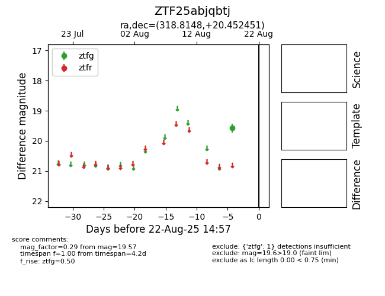

Target ZTF25abjqbtj at 2025-08-22 15:31, see:
FINK: fink-portal.org/ZTF25abjqbtj
Lasair: lasair-ztf.lsst.ac.uk/objects/ZTF25abjqbtj
ALeRCE: alerce.online/object/ZTF25abjqbtj
alt names
ZTF25abjqbtj (ztf,alerce)
coordinates:
equatorial (ra, dec) = (318.8148,+20.45245)
galactic (l, b) = (69.4623,-19.28607)
photometry
last ztfg=19.57
1 ztfg detections
